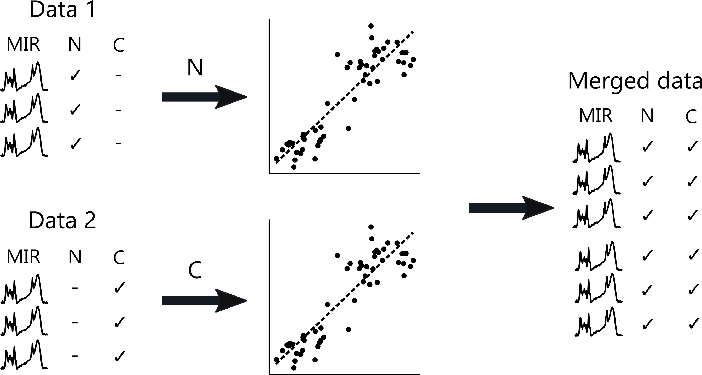
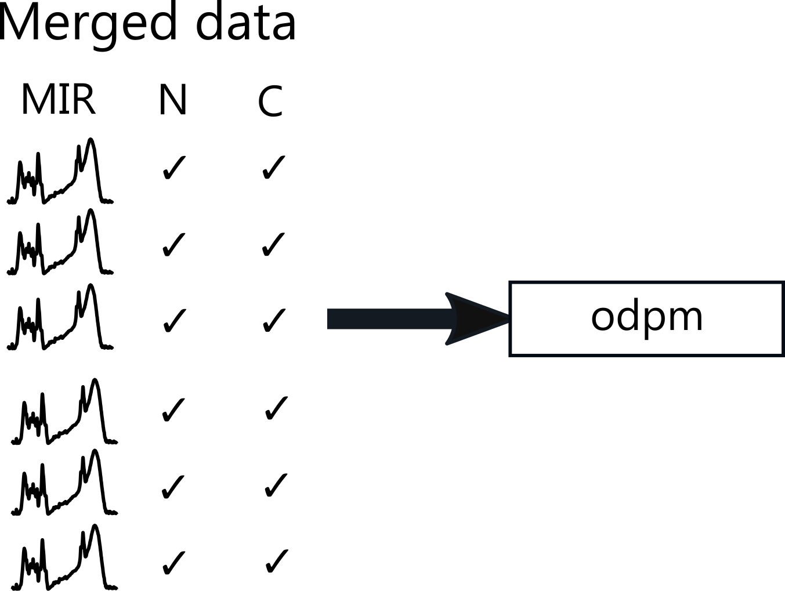

vignettes/a02-What-I-plan-to-do-with-the-data.Rmd
a02-What-I-plan-to-do-with-the-data.Rmdpmird is part of my PhD project. One of my goals is to facilitate data integration into dynamic peatland models to model long-term carbon accumulation. For this reason, I plan to develop a suite of calibration models that help to predict various peat properties from mid infrared spectra.
The mid infrared spectra and additional data on peat properties will be used to construct and validate these models.
I will publish these models so that future projects can benefit from their capabilities. For this, I’ve created the R package irpeat.
Moreover, I will use these models to cross-link different data sets to create a unique compendium of peat properties. The principle is quite easy: If someone provides mid infrared spectra and data on peat nitrogen content, I can develop a calibration model for this. Likewise if you provide for example mid infrared spectra and carbon content data, I construct a calibration model for this. Finally, I can use both models to predict the N and C content in your and his/her samples, respectively.

In addition, I plan to develop an open dynamic peatland model and I will use the data in pmird also to construct and validate this model. The aim is to provide an open and easily accessible mechanistic model for long-term carbon accumulation in peatlands that can be used by other scientists, for example to discover new hypotheses.

Since these tasks are a core part of my PhD project and I am expected to contribute the main part to it, there is only a limited extent to which collaborations on this work are possible.